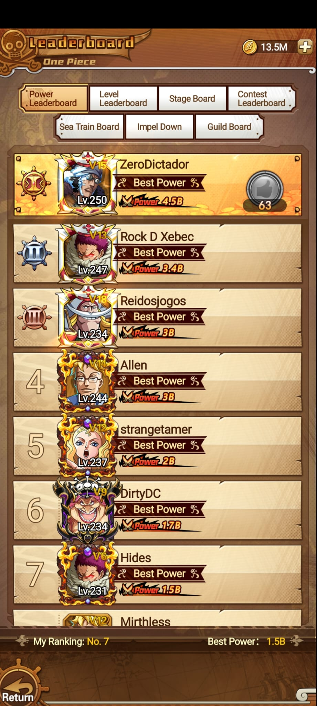
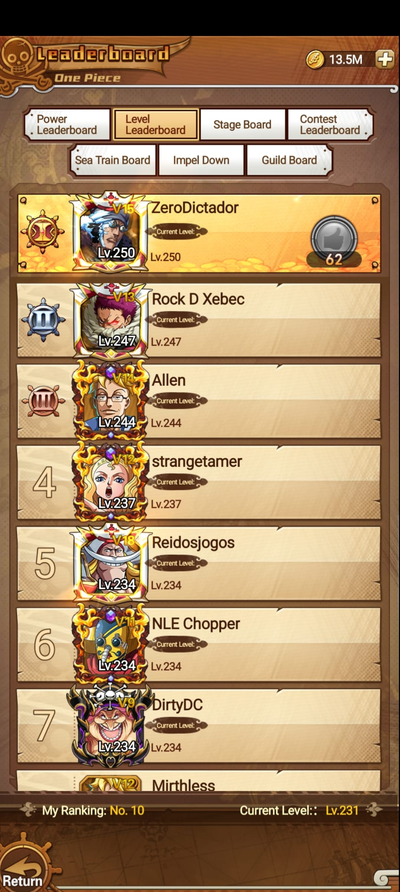
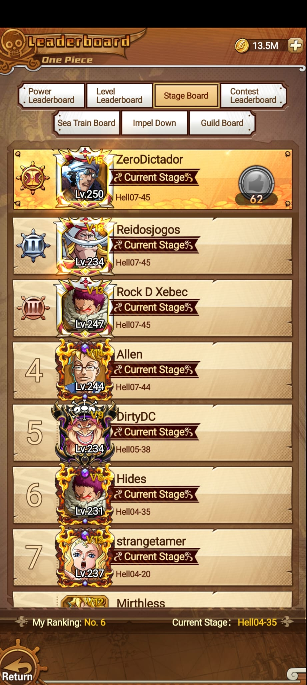
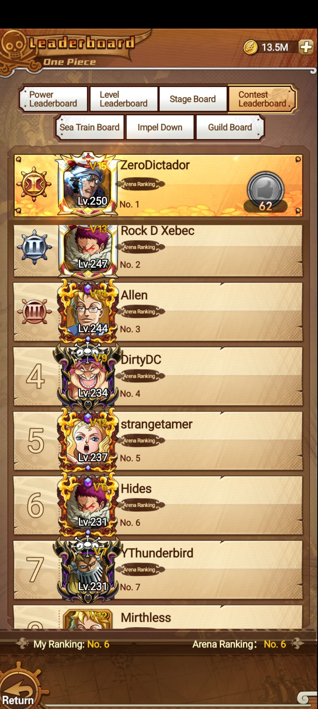
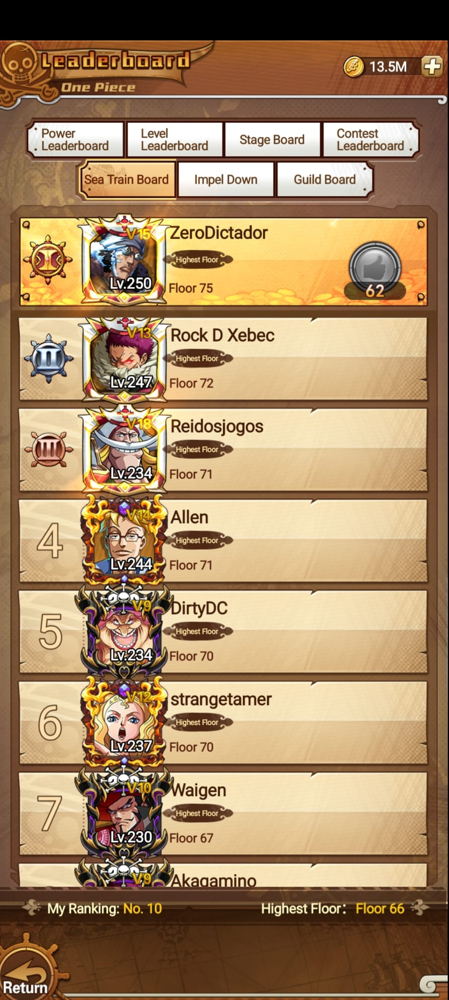
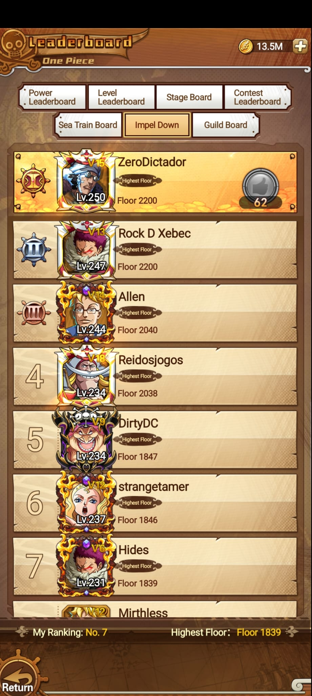
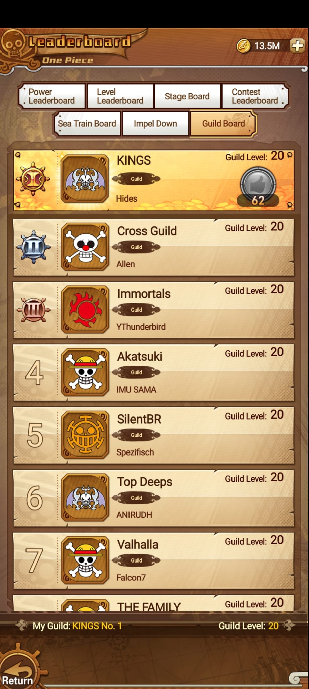

Clasificaciones
Leaderboard
Leaderboard reúne rankings por poder, nivel, progreso de campaña, arena, Sea Train, Impel Down y gremios. Sirve para comparar progreso contra otros jugadores y ubicar tu posición.
Tabs visibles
Rankings principales




Modos especiales
Sea Train, Impel Down y Guild



Resumen
Datos de Hides observados
| Ranking | Posición | Dato visible |
|---|---|---|
| Power Leaderboard | No. 7 | Best Power 1.5B |
| Level Leaderboard | No. 10 | Current Level Lv.231 |
| Stage Board | No. 6 | Current Stage Hell04-35 |
| Contest Leaderboard | No. 6 | Arena Ranking No. 6 |
| Impel Down | No. 7 | Highest Floor 1839 |
| Sea Train Board | No. 10 | Highest Floor 66 |
| Guild Board | KINGS No. 1 | Guild Level 20 |